ALPHAFIN · CREATIVE SPACE给好想法，
给好想法，
一个生长的地方。
记录灵感，整理素材，
把值得表达的内容变成作品。
从平面构成到角色，从微缩空间到超现实，再到黑白符号与镜面雕塑。
这次比较不同的造型语言。每个方向使用独立题材与构图，先看整体气质，再展开成一套插画。
Riso 作为偏好对照保留。点击任意风格，可在下方查看白色界面中的应用；前几轮作品收在折叠区域。
适合品牌入口、素材空状态；有温度，也有清晰的轮廓。
适合大幅欢迎画面；细线需要空间，不建议直接缩成小图标。
适合首页、创作引导与完成反馈；颜色柔和，形体仍清楚。
适合灵感、文稿与编辑内容；笔触更鲜明，表达更有人情味。
适合品牌主视觉、创作引导；小尺寸需要简化叶脉。
参考：Pentagram · Phenology ↗适合较大的模块入口；本版装饰感更强，需要控制用量。
空间叙事参考：BUCK · Airbnb ↗适合较大的产品图标；浅色背景下需保留深色轮廓。
材质层次参考：Fluent 2 ↗记录灵感，整理素材，
把值得表达的内容变成作品。
本轮是品牌插画方向稿。细节丰富的图形用于较大展示位；小尺寸入口与 16–24px 导航图标，需要另做简化，避免直接缩图。
一句还没写完的话，也可以是一个开始。
把它写下来，慢慢变成你的下一份作品。
有一个小故事稿纸、小人和飞鸟形成关系，让画面多一点可看的细节。
有轻重和疏密细墨线、少量实黑与两处淡色，让大面积白色也有节奏。
与界面一起构图文字靠左，画面向上舒展；操作保持清楚，插画留在它的位置。
从文稿到声音，从素材到作品。
在这里，开始下一次创作。
把常用素材收好，下次创作随时取用。
在发布前，做最后一次确认。
三种方向共用白色界面和紧凑控件。区别落在插画的轮廓、色彩比例与空间关系；入口和状态有个性，日常操作保持清晰。
业务场景 · 6 类文稿、音频、视频、素材、发布、数据。三个现代方向各六类，点击上方卡片可同步切换。历史探索仅保留作对照。
通用状态 · 下一层扩展首次使用、空白、搜索无结果、成功、失败、权限提示。已示范空白与完成，其余随方向细化。
功能图标 · 统一克制导航和表单保留小尺寸线性图标；插画集中在入口、引导与状态区域。
超现实拼贴 · 已选定的全站插画风格
显示 14 / 14 张插画
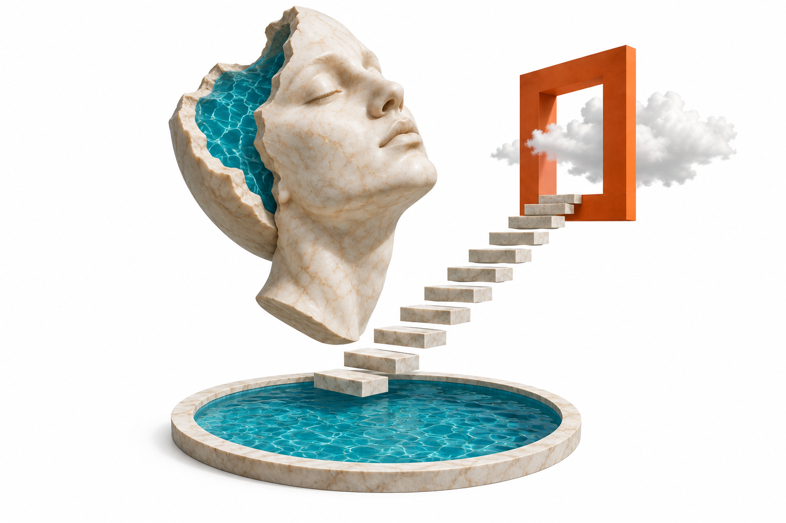
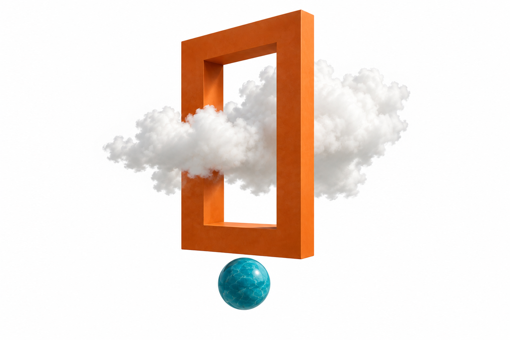
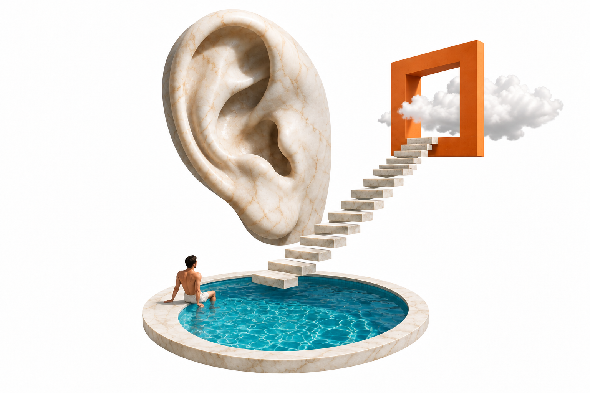
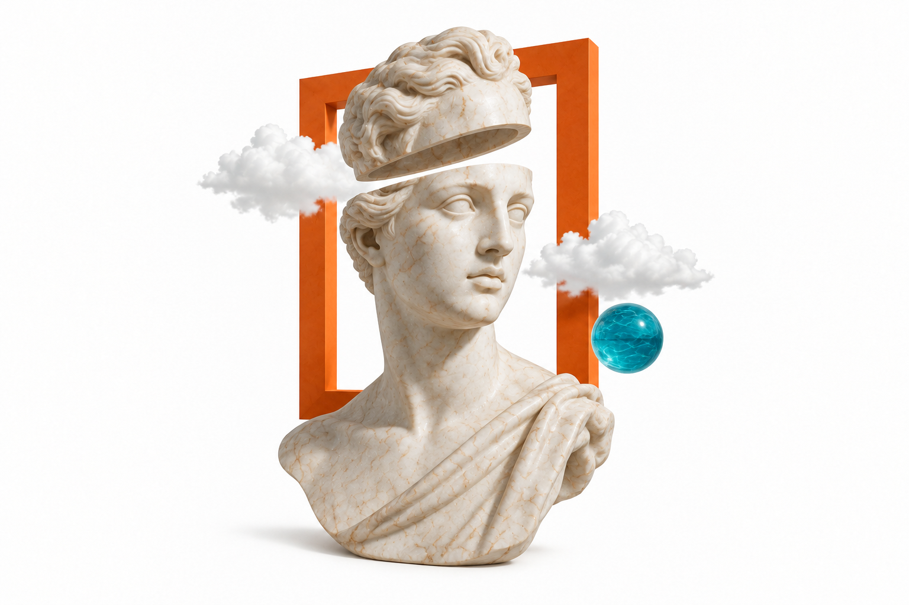
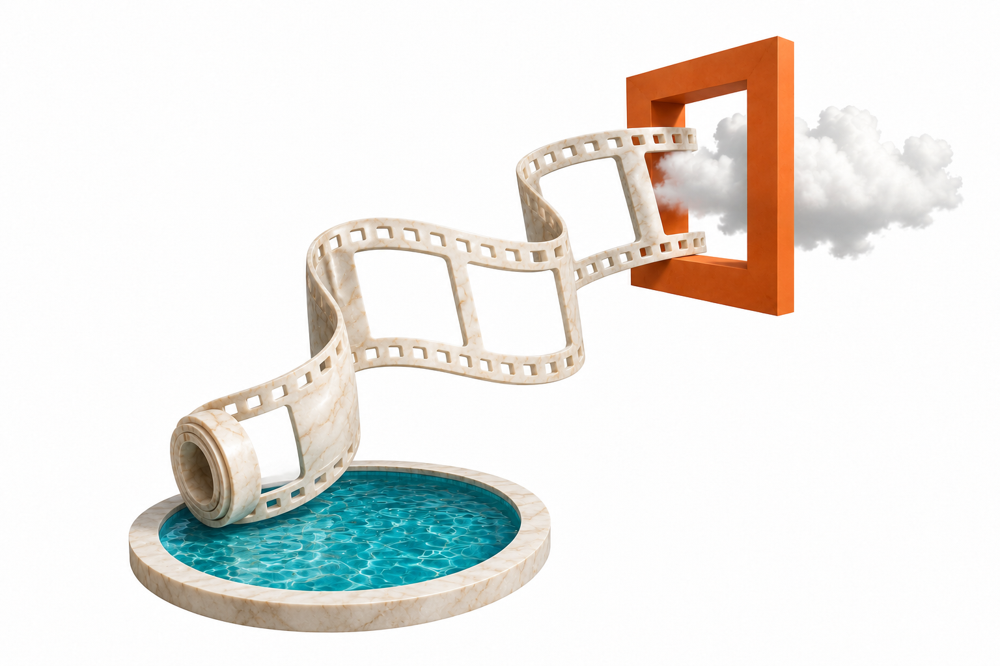
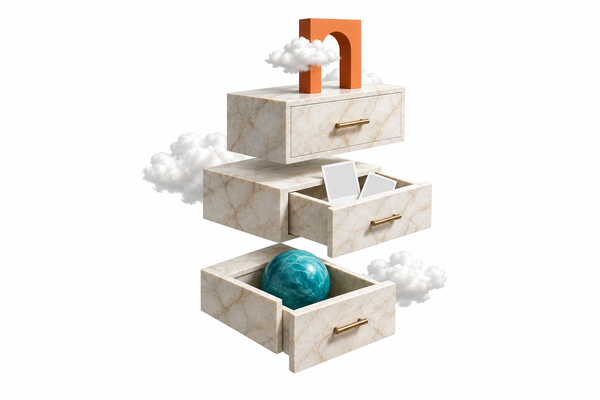
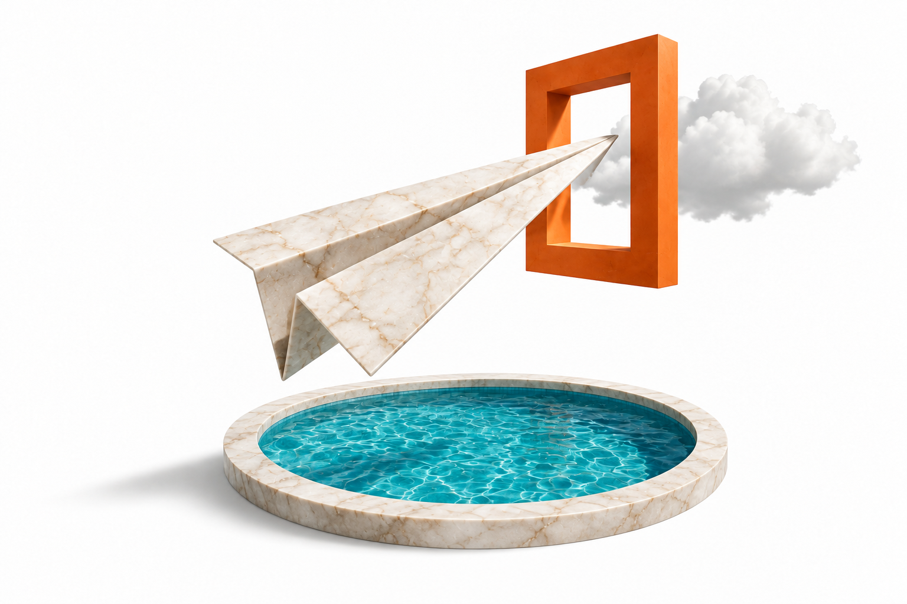
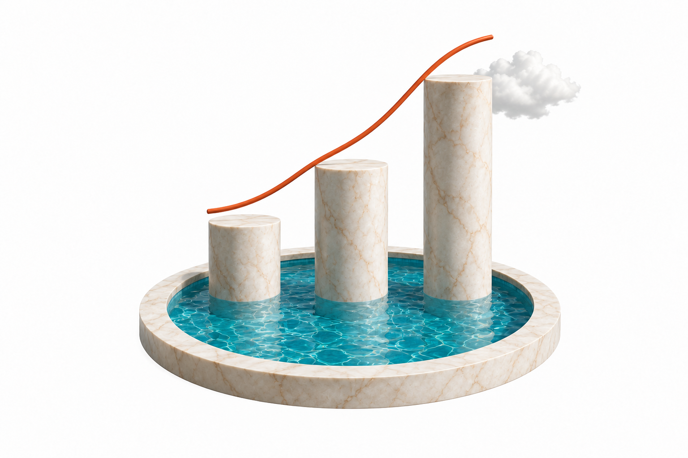
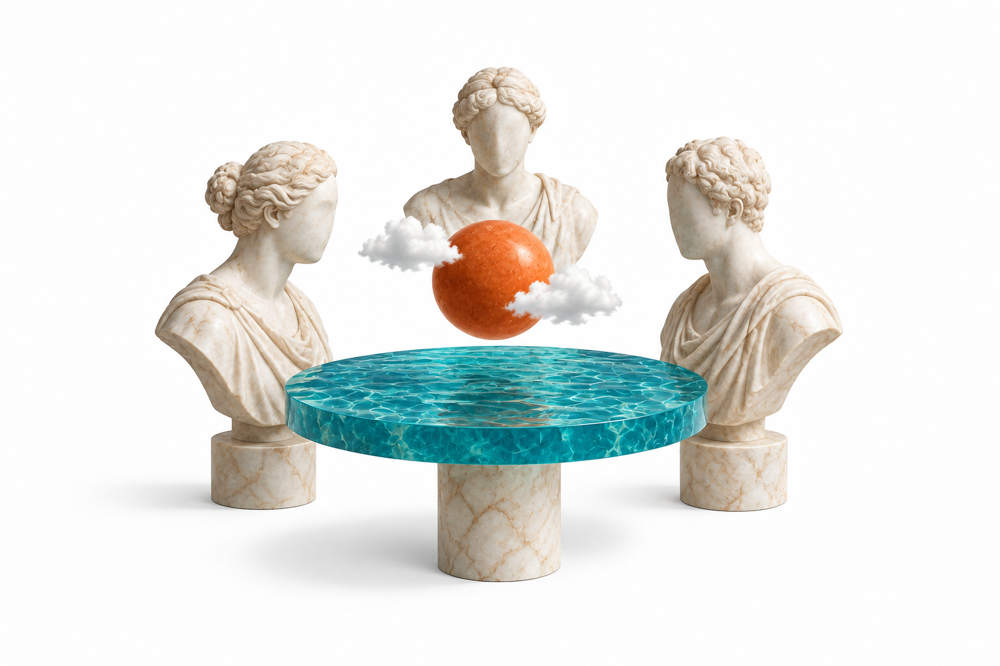
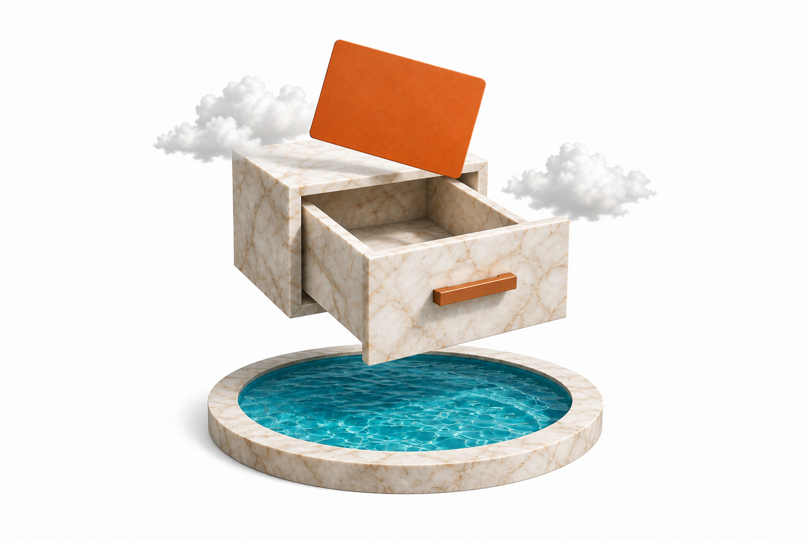
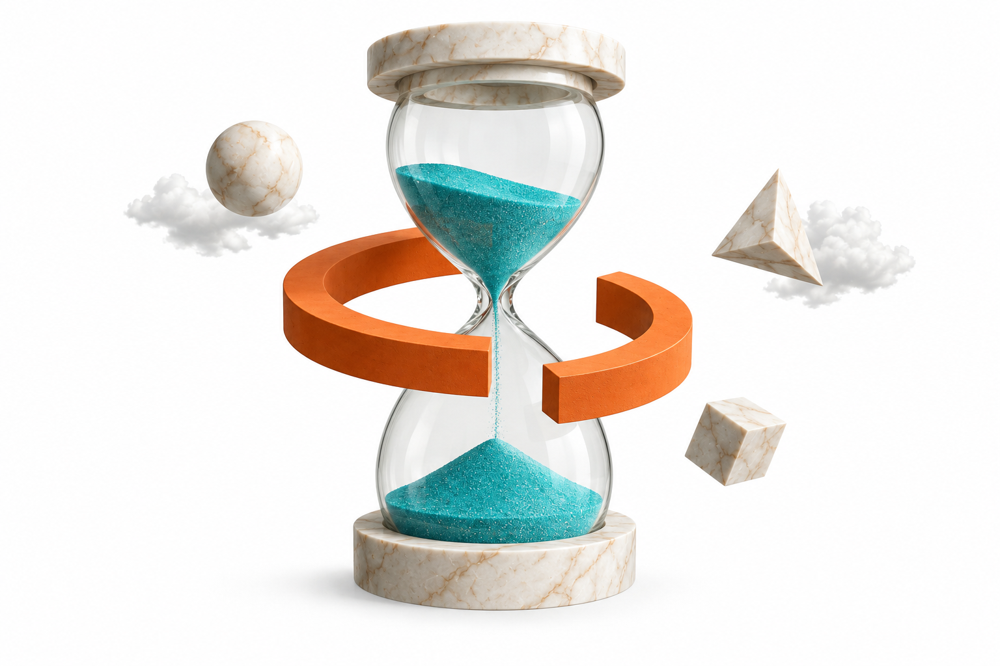
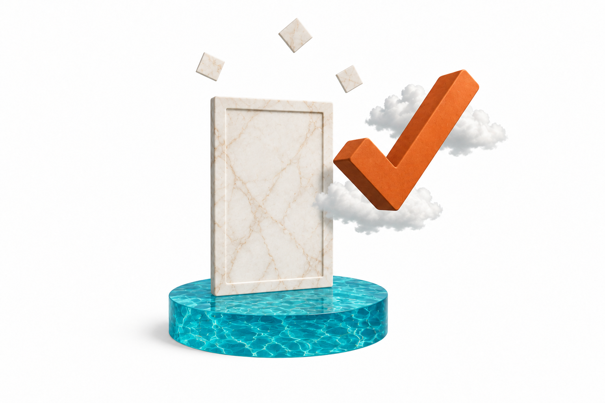
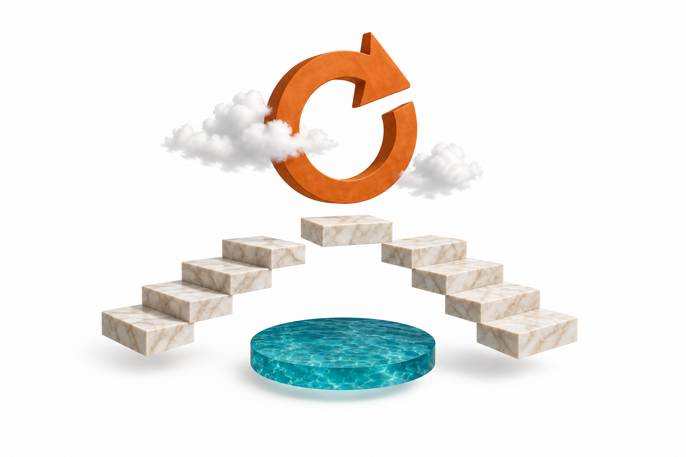
没有匹配的插画。试试其他关键词或分类。
整张等比展示，保留周围留白；避免拉伸、裁切主体，或将插画作为工具栏图标。
干净的工作界面里，留一点超现实的想象。
写下第一句，找到合适的声音。
让每个好想法，都有自己的表达。
选择音色，放入文稿，给内容一个声音。
再看一眼标题与素材，就可以安排发布了。
超现实拼贴插画只出现在创作入口、空状态和完成反馈；表格、表单与工作区沿用清晰的线性图标。
按真实源码盘点，以组件类型归并。每个组件卡片均可查看对应文件。
共 68 组组件样例
这是设计与交互样板。已有系统内容不做删除；本页数据为演示，不执行真实生成、上传、发布、支付或授权。
项目组件映射 · 本地交互样例
普通、搜索、只读、禁用与密码可见状态
components/ui/input.tsx · label.tsx即时字数反馈，保留项目现有 20 / 700 字约束
components/ui/textarea.tsx · features/xhs-publish/ContentFields.tsx包含部分选中状态与整行可点击区域
components/ui/radio-group.tsx · checkbox.tsx · switch.tsx统一搜索、空结果、勾选和已选标签
搜索、勾选、确认选择；可在标签上移除。
components/audio/shared/VoiceSearchSelect.tsx · AudioLibrarySelector/AudioLibrarySelector.tsx键盘调节，步进器范围 1–20
components/ui/slider.tsx · features/video-clip/components/ClipWorkspace/TimelineZoomControls.tsx日期网格、月份切换、今天、时分与确认
统一设计日历与时间，不弹出系统默认日期菜单。
features/xhs-publish/ContentFields.tsx · BatchPublishPanel.tsx项目组件映射 · 本地交互样例
排序、过滤、全选、部分选中、无结果、分页边界都能操作
| 状态 | 更新时间 | 操作 |
|---|
components/ui/table.tsx · features/image-studio/components/BatchGenerationTable/ · features/xhs-publish/BatchResults.tsx缩略图、元信息、悬停、点击详情；图像为排版占位稿
components/ui/card.tsx · features/image-studio/components/GraphicMode/StepResults.tsx项目组件映射 · 本地交互样例
普通表单、必填错误、确认与取消
components/ui/dialog.tsx · alert-dialog.tsx · conversation/BatchDeleteDialog.tsx两种容器分别设计，保留关闭与返回路径
嵌入面板随容器布局，抽屉覆盖在页面上方。
components/ui/sheet.tsx · inline-panel.tsx · features/video-clip/components/ClipWorkspace/MaterialLibraryDrawer.tsx不依赖鼠标；Esc 隐藏提示
components/ui/tooltip.tsx · hover-card.tsx复选筛选、应用、重置、导出与归档的演示反馈
当前：全部内容
components/ui/popover.tsx · features/writing-studio/components/SessionFilterPopover.tsx项目组件映射 · 本地交互样例
低饱和度背景；颜色与明确文字共同表达状态
components/ui/alert.tsx · badge.tsx轻阴影、状态图标、撤销和关闭
轻提示位于右下角；不会抢焦点，支持手动关闭。
components/ui/toast.tsx仅本地计时演示，完成与取消都有明确状态
components/ui/progress.tsx · motion-primitives.tsx · features/image-studio/components/StepProgress.tsx避免布局跳动，不使用夸张的扫光
保留内容尺寸；系统开启减少动态效果时停止闪动。
components/ui/skeleton.tsx · motion-primitives.tsx每种状态都有原因说明和相应的下一步
创建第一个任务，作品将在这里显示。
components/AudioStudio/DisplayPanel.tsx · features/xhs-publish/usePublishAccess.ts项目组件映射 · 本地交互样例
默认、拖拽、校验错误、模拟进度、完成与移除
components/ui/unified-file-upload.tsx · components/MediaUploadWithPreview.tsx网格选中边框与勾选，数量反馈和媒体详情
features/xhs-publish/ImagePicker.tsx · VideoPicker.tsx · features/knowledge-hub/SourcePickerDialog.tsx文件类型、名称、大小、处理状态和来源详情
components/conversation/kb/KnowledgeBaseFileCard.tsx · KnowledgeBaseFileDetailModal.tsx当前目录 / 汇总区分、复制移动目标与不可用素材
逻辑路径：品牌素材 / 产品 / 介绍视频
其他引用：活动素材 / 秋季新品
物理来源：上传文件 → 原始视频；状态：已解析。
片段 1 · 00:00–00:05：产品外观与包装。
勾选素材后，可在当前目录复制或移动引用。
选择状态查看对应反馈。
features/knowledge-hub/MaterialTable.tsx · features/knowledge-hub/KnowledgeHubShell.tsx · features/knowledge-hub/FolderActionDialog.tsx · features/knowledge-hub/MaterialDetailPanel.tsx · features/knowledge-hub/SourceMaterialBrowser.tsx
项目组件映射 · 本地交互样例
真实本地音频播放、暂停、拖动和音量
点击播放才会发声；不调用语音模型。
components/AudioStudio/AudioPlayerBar.tsx · AudioCard.tsx · audio/shared/AudioSegmentPlayer.tsx深色仅用于媒体画布，不将全站改为暗色
features/video-clip/components/ClipWorkspace/VideoPreviewPlayer.tsx · components/conversation/inline-batch/InlineVideoPreview.tsx分镜选择与提示词分别保存；不启动生成
features/video-clip/components/ClipWorkspace/TimelinePanel.tsx · SceneEditorPanel.tsx · features/aigc/components/AigcManualEditor.tsx项目组件映射 · 本地交互样例
资源卡选择、标签、模板比例和字幕安全区
components/firsttalk/PersonaBindingPanel.tsx · features/video-clip/components/ClipWorkspace/ConfigPanel/AvatarSelector.tsx · components/DigitalHuman/PackagingTemplatePreview.tsx进行中、可重试、完成与结果入口
features/marketing-video/MarketingVideoCard.tsx · features/image-studio/components/BatchGenerationTable/BatchGenerationRowActionsCell.tsxMarkdown 层级、用户/助手消息、附件与发送状态
components/chat/SimpleChatComposer.tsx · SimpleChatMessage.tsx · MessageAttachments.tsx · MarkdownMessage.tsx账号可用性、最终确认、待派发和成功/失败回执
features/xhs-publish/UnifiedPublishPanel.tsx · BatchPublishPanel.tsx · BatchResults.tsx价格信息、不可执行状态与授权说明；不支付、不授权
components/PaymentModal.tsx · components/Sidebar/SidebarAccountSection.tsx · app/authorize/mitra/page.tsx检查必填与邮箱格式；不接入真实登录
components/ui/modern-animated-sign-in.tsx · app/login/page.tsx工具按钮 24px · 常规按钮与输入框 32px · 圆角 8px
细边框区分输入区域，蓝色只强调关键操作。悬停轻微加深，聚焦保留细光圈。
components/ui/button.tsx · select.tsx · input.tsx · textarea.tsx · checkbox.tsx · switch.tsx · label.tsx · separator.tsxUntitled UI 视觉参考 · AlphaFin 紧凑适配
清晰，自有秩序 26 / 31
分区标题 14 / 20
正文保持舒适的阅读节奏。14 / 22
按钮、表单、导航 · 13 / 18
时间、数量、辅助信息 · 12 / 18
轻反馈 120ms · 浮层 160ms · 折叠 200ms · 抽屉 240ms
动画跟随操作发生，关闭也有过渡；连续点击可以立即反向。
状态改变清楚，操作不被打断
也会自动遵循系统的「减少动态效果」。
仅展示组件组合，不代表新的业务流程
生成结果会显示在这里
44–52px 行高 · 悬停灰底
| 任务名称 | 状态 | 更新时间 |
|---|---|---|
| 产品介绍 · 第一版 | 已完成 | 今天 10:24 |
| 周末内容计划 | 处理中 | 今天 10:18 |
| 品牌故事 | 草稿 | 昨天 16:30 |
按当前源码快照逐文件核对
组件设计覆盖，业务页面尚未迁移。8 个 Provider / 状态容器不单独绘制 UI。点击设计样例可检查对应类型；逐文件清单保留原页面字段索引。
补齐专用交互与异常状态 · 本地演示
公告展开、便签编辑与无内容状态
展示公告展开后的正文与时间，保留原有工作区入口。
选择状态查看对应的界面反馈。
app/(authenticated)/dashboard/page.tsxapp/(authenticated)/page.tsxcomponents/home/AnnouncementBanner.tsxcomponents/home/BoardSection.tsxcomponents/home/StickyNote.tsx数值、日期筛选、折线图、图例及未知数据
折线：观察时间变化。数值未知时使用 —，图表不伪造为 0。
7 日示例：120、180、164、250、216、290、320 次观看。
选择状态查看对应的界面反馈。
app/(authenticated)/dashboard/page.tsxapp/analytics/page.tsxfeatures/analytics/MatrixOverview.tsxfeatures/analytics/NoteDetailsTable.tsxfeatures/nova-trend/components/AnalysisChart.tsxfeatures/nova-trend/components/BloggerDetailPage.tsxfeatures/nova-trend/components/BloggerInputBar.tsxfeatures/nova-trend/components/KeywordDetailPage.tsxfeatures/nova-trend/components/MetricsCards.tsxfeatures/nova-trend/components/SubscriptionHomePage.tsxfeatures/nova-trend/components/SubscriptionPanel.tsxfeatures/nova-trend/components/SubscriptionRefreshNotice.tsxfeatures/nova-trend/components/TopicCard.tsxfeatures/nova-trend/components/TopicFeed.tsxfeatures/nova-trend/components/TrendingBoard.tsx平台选择、添加订阅、动态列表和刷新失败
选择状态查看对应的界面反馈。
app/(authenticated)/nova-trend/page.tsxfeatures/nova-trend/components/BloggerDetailPage.tsxfeatures/nova-trend/components/BloggerInputBar.tsxfeatures/nova-trend/components/KeywordDetailPage.tsxfeatures/nova-trend/components/SubscriptionHomePage.tsxfeatures/nova-trend/components/SubscriptionPanel.tsxfeatures/nova-trend/components/SubscriptionRefreshNotice.tsxfeatures/nova-trend/components/TopicCard.tsxfeatures/nova-trend/components/TopicFeed.tsxfeatures/nova-trend/components/TrendingBoard.tsx报告章节、引用来源、未知指标、解析降级
从使用场景、产品细节、用户问题组织内容。
核心观察：用具体场景说明产品价值。
来源 A · 演示摘录，发布时间未知。
选择状态查看对应的界面反馈。
app/(authenticated)/nova-trend/page.tsxapp/share/douyin/[id]/page.tsxcomponents/MarkdownMessage.tsxcomponents/conversation/OriginalTextBlock.tsxcomponents/conversation/TopicAnalysisCard.tsxcomponents/firsttalk/ConversationOverview.tsxcomponents/firsttalk/DeviceConfigSection.tsxcomponents/firsttalk/PersonaBindingPanel.tsxcomponents/firsttalk/SessionCards.tsxcomponents/firsttalk/VoiceCard.tsxfeatures/first-talk/components/FirstTalkPresenter.tsxfeatures/first-talk/components/FirstTalkReportView.tsxfeatures/nova-trend/components/AnalysisProgress.tsxfeatures/nova-trend/components/BloggerDetailPage.tsxfeatures/nova-trend/components/BloggerInputBar.tsxfeatures/nova-trend/components/KeywordDetailPage.tsxfeatures/nova-trend/components/RecommendationPanel.tsxfeatures/nova-trend/components/ReportListItem.tsxfeatures/nova-trend/components/ReportSection.tsxfeatures/nova-trend/components/ReportViewer.tsxfeatures/nova-trend/components/SubscriptionHomePage.tsxfeatures/nova-trend/components/SubscriptionPanel.tsxfeatures/nova-trend/components/SubscriptionRefreshNotice.tsxfeatures/nova-trend/components/TopicCard.tsxfeatures/nova-trend/components/TopicDetail.tsxfeatures/nova-trend/components/TopicFeed.tsxfeatures/nova-trend/components/TrendingBoard.tsxfeatures/writing-studio/components/AgentPickerPanelContent.tsxfeatures/writing-studio/components/HotspotContextCard.tsxfeatures/writing-studio/components/SessionFilterPopover.tsxfeatures/writing-studio/components/WritingStudioPresenter.tsxfeatures/writing-studio/components/WritingStudioSessionCard.tsxfeatures/writing-studio/components/WritingStudioSessionList.tsx扫码等待、扫码成功、短信、失效与刷新
选择状态查看对应的界面反馈。
features/nova-trend/components/DouyinLoginDialog.tsxfeatures/nova-trend/components/PlatformAuthDialog.tsx多榜单并列，保留新 / 热 / 沸 / 爆以及原文入口
features/nova-trend/components/TrendingBoard.tsx
补齐专用交互与异常状态 · 本地演示
录音计时、停止试听、模型名称及处理中状态
仅演示计时与波形状态，不申请麦克风或录制声音。
选择状态查看对应的界面反馈。
app/(authenticated)/voice-clone/components/AudioPlayer.tsxapp/(authenticated)/voice-clone/components/AudioRecorder.tsxapp/(authenticated)/voice-clone/components/AudioUploader.tsxapp/(authenticated)/voice-clone/components/ProcessingStatus.tsxapp/(authenticated)/voice-clone/page.tsx形象上传、归一化、音频来源和对应原稿
选择状态查看对应的界面反馈。
app/(authenticated)/digital-human/page.tsxcomponents/DigitalHuman/ConfigPanel.tsxcomponents/DigitalHuman/CreateAvatarDialog.tsxcomponents/DigitalHuman/HistoryItemCard.tsxcomponents/DigitalHuman/HistoryPanel.tsxfeatures/aigc/components/AigcActions.tsxfeatures/aigc/components/AigcClipMaterialsButton.tsxfeatures/aigc/components/AigcDialog.tsxfeatures/aigc/components/ShotMaterialsPanel.tsxfeatures/digital-human/components/DigitalHumanPresenter.tsxfeatures/video-clip/components/ClipWorkspace/ConfigPanel/AudioMatchConfig.tsxfeatures/video-clip/components/ClipWorkspace/ConfigPanel/AudioMatchTab.tsxfeatures/video-clip/components/ClipWorkspace/ConfigPanel/AvatarSelector.tsxfeatures/video-clip/components/ClipWorkspace/ConfigPanel/DHVideoSourceSelector.tsxfeatures/video-clip/components/ClipWorkspace/ConfigPanel/ExistingDHVideoSelector.tsxfeatures/video-clip/components/ClipWorkspace/ConfigPanel/ScriptTextInput.tsxfeatures/video-clip/components/ClipWorkspace/DigitalHumanPanel.tsxfeatures/video-clip/components/ClipWorkspace/PresenterPreparation.tsx包装预览、双标题、行数限制、颜色位置
选择状态查看对应的界面反馈。
app/(authenticated)/digital-human/page.tsxcomponents/DigitalHuman/LineLimitedTextarea.tsxcomponents/DigitalHuman/MainWorkArea.tsxcomponents/DigitalHuman/PackagingTemplatePreview.tsxcomponents/DigitalHuman/WatermarkSection.tsxfeatures/digital-human/components/DigitalHumanPresenter.tsxfeatures/video-clip/components/ClipWorkspace/ClipPackagingPanel.tsxfeatures/video-clip/components/ClipWorkspace/ConfigPanel/SubtitleTemplateSelector.tsx音量、封面适配、来源切换与配置过期提示
选择状态查看对应的界面反馈。
app/(authenticated)/video-clip/page.tsxfeatures/video-clip/components/ClipWorkspace/ClipFinishingPanel.tsx片段位置、时长、拆合、撤销及重新合成边界
已选择镜头 1；调整保留原画面，重新生成后生效。
选择状态查看对应的界面反馈。
app/(authenticated)/video-clip/page.tsxfeatures/video-clip/components/ClipWorkspace/BlockScriptContent.tsxfeatures/video-clip/components/ClipWorkspace/BlockTextGrouping.tsxfeatures/video-clip/components/ClipWorkspace/ConfigPanel/MainActionButton.tsxfeatures/video-clip/components/ClipWorkspace/ConfigPanel/SecondaryActions.tsxfeatures/video-clip/components/ClipWorkspace/ConfigPanel/index.tsxfeatures/video-clip/components/ClipWorkspace/PlaybackTimingDetails.tsxfeatures/video-clip/components/ClipWorkspace/PublishedPlaybackTiming.tsxfeatures/video-clip/components/ClipWorkspace/RenderPlanEditorPanel.tsxfeatures/video-clip/components/ClipWorkspace/SceneEditorPanel.tsxfeatures/video-clip/components/ClipWorkspace/SceneGroupingEditor.tsxfeatures/video-clip/components/ClipWorkspace/StoryboardPanel.tsxfeatures/video-clip/components/ClipWorkspace/TimelinePanel.tsxfeatures/video-clip/components/ClipWorkspace/TimelineZoomControls.tsxfeatures/video-clip/components/ClipWorkspace/VisualBlockInspector.tsxfeatures/video-clip/components/ClipWorkspace/VisualBlockTrack.tsxfeatures/video-clip/components/ClipWorkspace/index.tsx知识库 → 文件 → 分镜；替换目标始终可见
选择状态查看对应的界面反馈。
app/(authenticated)/admin/knowledge-hub/material-browser/page.tsxapp/(authenticated)/admin/knowledge-hub/page.tsxapp/(authenticated)/knowledge-base/page.tsxapp/(authenticated)/video-clip/page.tsxcomponents/conversation/kb/KnowledgeBaseDocPanel.tsxcomponents/conversation/kb/KnowledgeBaseFileCard.tsxcomponents/conversation/kb/KnowledgeBaseFileDetailModal.tsxcomponents/conversation/kb/KnowledgeBaseGridView.tsxcomponents/conversation/kb/KnowledgeBaseManageView.tsxcomponents/conversation/kb/KnowledgeBaseShell.tsxcomponents/conversation/kb/KnowledgeBaseUploadCard.tsxcomponents/conversation/kb/KnowledgeBaseUseView.tsxfeatures/aigc/components/AigcActions.tsxfeatures/aigc/components/AigcClipMaterialsButton.tsxfeatures/aigc/components/AigcDialog.tsxfeatures/aigc/components/ShotMaterialsPanel.tsxfeatures/knowledge-hub/FolderActionDialog.tsxfeatures/knowledge-hub/FolderTree.tsxfeatures/knowledge-hub/KnowledgeHubShell.tsxfeatures/knowledge-hub/MaterialDetailPanel.tsxfeatures/knowledge-hub/MaterialTable.tsxfeatures/knowledge-hub/SourceMaterialBrowser.tsxfeatures/knowledge-hub/SourcePickerDialog.tsxfeatures/video-clip/components/ClipWorkspace/BlockScriptContent.tsxfeatures/video-clip/components/ClipWorkspace/BlockTextGrouping.tsxfeatures/video-clip/components/ClipWorkspace/ConfigPanel/KnowledgeBaseSelector.tsxfeatures/video-clip/components/ClipWorkspace/ConfigPanel/MainActionButton.tsxfeatures/video-clip/components/ClipWorkspace/ConfigPanel/SecondaryActions.tsxfeatures/video-clip/components/ClipWorkspace/ConfigPanel/index.tsxfeatures/video-clip/components/ClipWorkspace/MaterialLibraryDrawer.tsxfeatures/video-clip/components/ClipWorkspace/MaterialTimingSelector.tsxfeatures/video-clip/components/ClipWorkspace/PlaybackTimingDetails.tsxfeatures/video-clip/components/ClipWorkspace/PublishedPlaybackTiming.tsxfeatures/video-clip/components/ClipWorkspace/RenderPlanEditorPanel.tsxfeatures/video-clip/components/ClipWorkspace/SceneEditorPanel.tsxfeatures/video-clip/components/ClipWorkspace/SceneGroupingEditor.tsxfeatures/video-clip/components/ClipWorkspace/StoryboardPanel.tsxfeatures/video-clip/components/ClipWorkspace/TimelinePanel.tsxfeatures/video-clip/components/ClipWorkspace/TimelineZoomControls.tsxfeatures/video-clip/components/ClipWorkspace/VisualBlockInspector.tsxfeatures/video-clip/components/ClipWorkspace/VisualBlockTrack.tsxfeatures/video-clip/components/ClipWorkspace/index.tsx失败镜头可编辑，已完成镜头保持；提示词历史只读
2 / 3 镜就绪。全部就绪后才能重新合成。
历史版本只用于查看提示词。已覆盖的旧素材不能切回；原成片保留。
选择状态查看对应的界面反馈。
features/aigc/components/AigcActions.tsxfeatures/aigc/components/AigcClipMaterialsButton.tsxfeatures/aigc/components/AigcDialog.tsxfeatures/aigc/components/AigcManualEditor.tsxfeatures/aigc/components/ShotMaterialsPanel.tsx独立流程、单稿输入、资源配置和费用上限
选择状态查看对应的界面反馈。
app/(authenticated)/marketing-video/page.tsxfeatures/marketing-video/MarketingVideoCard.tsxfeatures/marketing-video/MarketingVideoCreateForm.tsx双音色条件显示、情感提示和音色加载恢复
可使用方括号标签，例如 [悲伤][低语] 我要走了。对话模式分别选择主讲人与对话人的声音。
选择状态查看对应反馈。
components/AudioStudio/CreationPanel.tsx · app/(authenticated)/audio-studio/page.tsx
补齐专用交互与异常状态 · 本地演示
图文视频互斥、平台可用性、标题正文与草稿保留
选择状态查看对应的界面反馈。
app/(authenticated)/douyin-publish/page.tsxapp/(authenticated)/wxchannel-publish/page.tsxfeatures/xhs-publish/ContentFields.tsxfeatures/xhs-publish/GraphicPublishButton.tsxfeatures/xhs-publish/ImagePicker.tsxfeatures/xhs-publish/PlatformBrandIcon.tsxfeatures/xhs-publish/UnifiedPublishPanel.tsxfeatures/xhs-publish/VideoPicker.tsx导入摘要、列映射、逐行错误和影子模式
选择状态查看对应的界面反馈。
app/media-publisher/components/HistoryPanel.tsxapp/media-publisher/page.tsxcomponents/DeviceMappingSettings.tsx分钟精度、未来时间、全选复核和结果展开
选择状态查看对应的界面反馈。
app/(authenticated)/douyin-publish/page.tsxapp/(authenticated)/wxchannel-publish/page.tsxapp/media-publisher/components/HistoryPanel.tsxapp/media-publisher/page.tsxfeatures/xhs-publish/BatchPublishPanel.tsxfeatures/xhs-publish/BatchResults.tsxfeatures/xhs-publish/ContentFields.tsxfeatures/xhs-publish/GraphicPublishButton.tsxfeatures/xhs-publish/PlatformBrandIcon.tsxfeatures/xhs-publish/UnifiedPublishPanel.tsx账号详情、开通、封禁、批量结果及不可逆确认层级
选择状态查看对应的界面反馈。
app/(authenticated)/admin/AccountDetailSheet.tsxapp/(authenticated)/admin/AccountsPanel.tsxapp/(authenticated)/admin/page.tsxfeatures/xhs-publish/XhsPublishAdminPanel.tsx按天按月、管理员操作、余额变化与空记录
| 时间 | 操作 | 目标 | 变动 | 操作后余额 |
|---|---|---|---|---|
| 今天 10:30 | 额度调整 · 示例 | 示例账号 | +100 | 2,480 |
| 今天 09:20 | 音频生成 · 示例 | 示例任务 | −20 | 2,380 |
选择状态查看对应的界面反馈。
app/(authenticated)/admin/AuditPanel.tsx核对身份线索、人工确认、资源失效与解绑
绑定 AF operator@example.invalid
邮箱是识别线索，必须核对原始消息与时间。
选择状态查看对应的界面反馈。
app/(authenticated)/admin/WeComBindingPanel.tsxapp/(authenticated)/admin/WeComResourceFields.tsx会话、人设报告、设备映射与默认资源
核心原则、技巧方法、示例参考、反面案例分别呈现。
选择状态查看对应的界面反馈。
app/(authenticated)/firsttalk/ip-persona/page.tsxapp/(authenticated)/firsttalk/page.tsxcomponents/DeviceMappingSettings.tsxcomponents/firsttalk/ConversationOverview.tsxcomponents/firsttalk/DeviceConfigSection.tsxcomponents/firsttalk/PersonaBindingPanel.tsxcomponents/firsttalk/SessionCards.tsxcomponents/firsttalk/VoiceCard.tsxfeatures/first-talk/components/FirstTalkPresenter.tsxfeatures/first-talk/components/FirstTalkReportView.tsxfeatures/xhs-publish/XhsPublishAdminPanel.tsx套餐、周期说明、订单状态和到账等待
套餐名称、周期额度和价格来自实际接口；这里仅演示层级。
选择状态查看对应的界面反馈。
app/(authenticated)/recharge/page.tsxapp/(authenticated)/recharge/result/page.tsxcomponents/PaymentModal.tsx权限开关、逐人设选择实际平台账号、保存与停用
未开通 · 仅演示
尚未绑定发布账号
选择状态查看对应反馈。
features/xhs-publish/XhsPublishAdminPanel.tsx
补齐专用交互与异常状态 · 本地演示
校验、协议阅读、链接失效、授权成功失败
长协议文本在独立容器中阅读，返回时保留表单。样例不提交协议确认。
选择状态查看对应的界面反馈。
app/auth/callback/page.tsxapp/authorize/mitra/page.tsxapp/login/page.tsxapp/reset-password/page.tsxcomponents/AuthSessionWatcher.tsxcomponents/CreditGuardWatcher.tsxcomponents/UserAgreement.tsx网络、额度、权限、过期、空态及操作恢复
选择状态查看对应的界面反馈。
app/(authenticated)/layout.tsxapp/(authenticated)/video-clip/history/page.tsxapp/layout.tsxapp/share/douyin/[id]/page.tsxcomponents/AppLayout.tsxcomponents/AudioStudio/AudioCard.tsxcomponents/AudioStudio/AudioCardWrapper.tsxcomponents/AudioStudio/AudioPlayerBar.tsxcomponents/AudioStudio/DisplayPanel.tsxcomponents/AuthSessionWatcher.tsxcomponents/CreditGuardWatcher.tsxcomponents/MediaUploadWithPreview.tsxcomponents/Sidebar/SidebarAccountSection.tsxcomponents/Sidebar/SidebarAnnouncementBadge.tsxcomponents/Sidebar/SidebarContent.tsxcomponents/Sidebar/SidebarToolSection.tsxcomponents/Sidebar/account/AccountMenuContent.tsxcomponents/Sidebar.tsxcomponents/TopNavTabs.tsxcomponents/audio/shared/AudioSegmentPlayer.tsxfeatures/video-clip/components/ClipWorkspace/ClipResultPreview.tsxfeatures/video-clip/components/ClipWorkspace/ConfigPanel/ErrorAlert.tsxfeatures/video-clip/components/ClipWorkspace/VideoPreviewPlayer.tsx补齐图表语义、层级、文本选中、数值、媒体和键盘规范
桌面控件 24 / 28 / 32px，输入框 32px；触控目标至少 44px。列表、表单与媒体工作区分别响应式重排；超宽时间轴和表格只在自身横向滚动。
| 原变量 | 新 Theme 对应 |
|---|---|
--font-geist-sans | var(--af-font) |
--font-geist-mono | var(--af-font-mono) |
--font-display | var(--af-font) |
--radius | 8px |
--background | var(--af-canvas) |
--foreground | var(--af-ink) |
--card | var(--af-surface) |
--card-foreground | var(--af-text) |
--popover | var(--af-overlay) |
--popover-foreground | var(--af-text) |
--primary | var(--af-blue) |
--primary-hover | var(--af-blue-hover) |
--primary-foreground | var(--af-on-accent) |
--secondary | var(--af-hover) |
--secondary-foreground | var(--af-text) |
--muted | var(--af-hover) |
--muted-foreground | var(--af-muted) |
--accent | var(--af-selected) |
--accent-foreground | var(--af-ink) |
--destructive | var(--af-danger) |
--border | var(--af-line) |
--input | var(--af-input-line) |
--ring | var(--af-blue) |
--chart-1 | var(--af-chart-1) |
--chart-2 | var(--af-chart-2) |
--chart-3 | var(--af-chart-3) |
--chart-4 | var(--af-chart-4) |
--chart-5 | var(--af-chart-5) |
--sidebar | var(--af-canvas) |
--sidebar-foreground | var(--af-text) |
--sidebar-primary | var(--af-blue) |
--sidebar-primary-foreground | var(--af-on-accent) |
--sidebar-accent | var(--af-selected) |
--sidebar-accent-foreground | var(--af-ink) |
--sidebar-border | var(--af-line) |
--sidebar-ring | var(--af-blue) |
--skeleton | var(--af-selected) |
--btn-border | var(--af-input-line) |
--success | var(--af-success) |
--warning | var(--af-warning) |
--info | var(--af-blue) |
--error-message | var(--af-danger) |
--shadow-xs | none |
--shadow-sm | none |
--shadow-md | var(--af-shadow-menu) |
--shadow-lg | var(--af-shadow-menu) |
派生圆角为 4 / 8 / 12 / 16px，输入和按钮使用 8px。白色内容面配细边框，阴影集中于控件边缘与浮层。